I capture moments that tell stories
Contact Me
📍 Croatia, Osijek
A cinematic visual creator based in Osijek, Croatia. Specializing in photography, speed-ramped video edits, and short-form storytelling, I help brands, businesses, and creatives bring their stories to life—frame by frame. Whether it’s a detailed car shoot, a restaurant visual, or behind-the-scenes content, my work blends emotion, rhythm, and craft.
Explore My Presets
 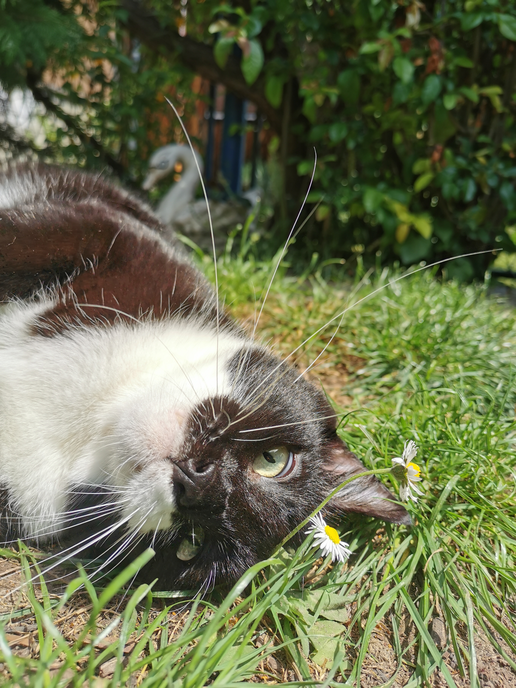
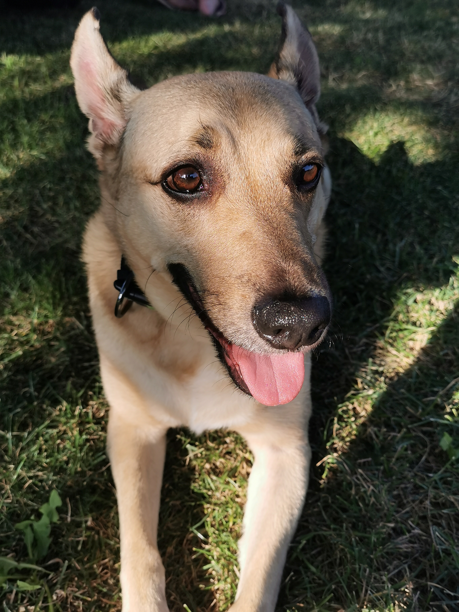
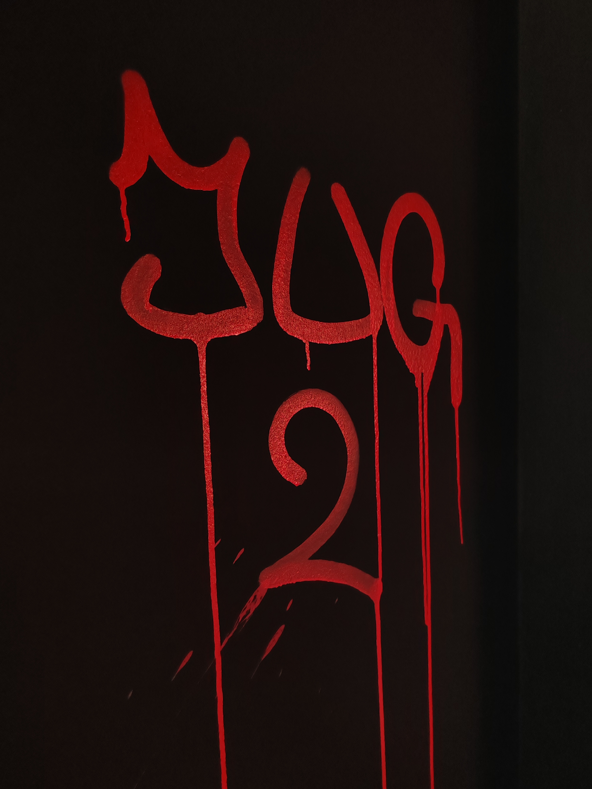
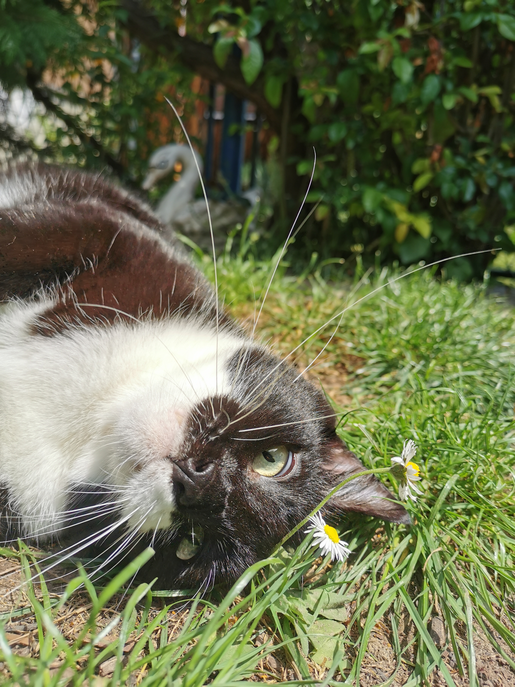
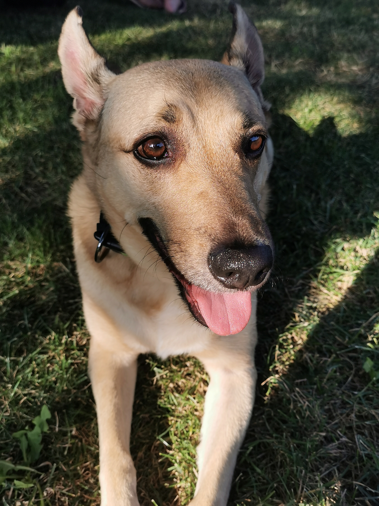
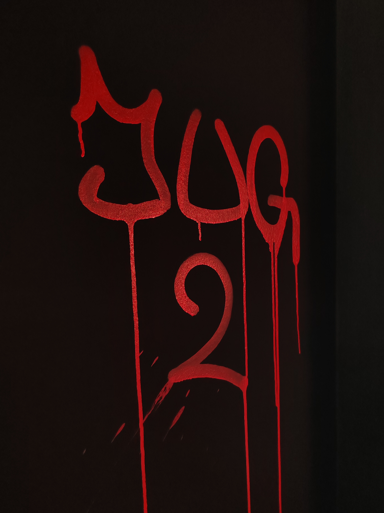
 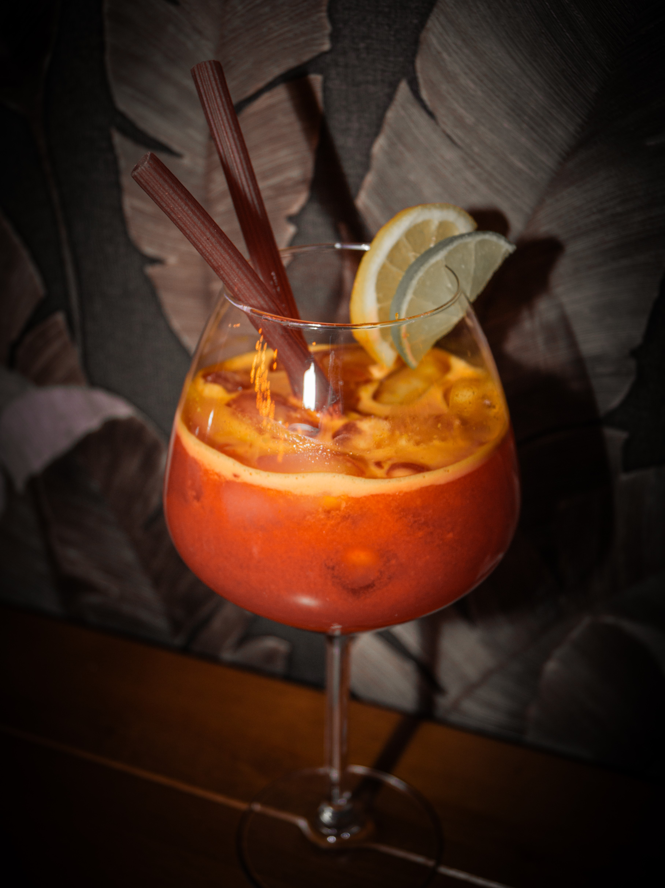
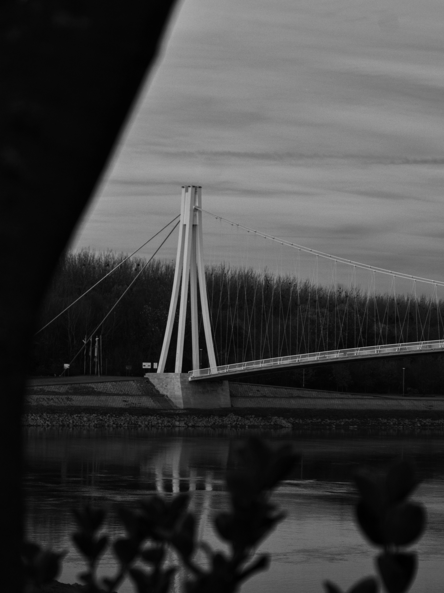
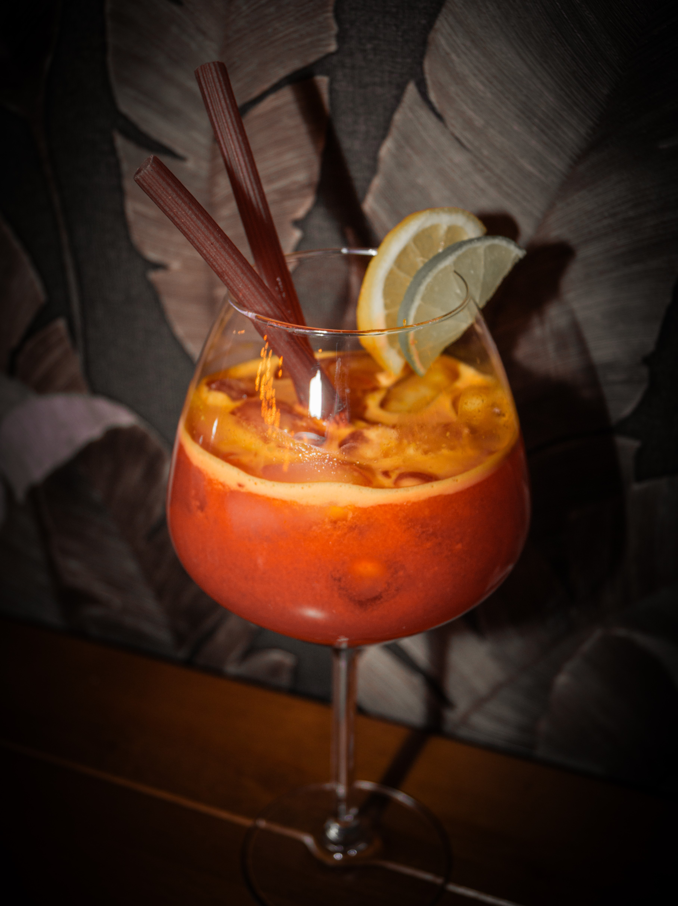
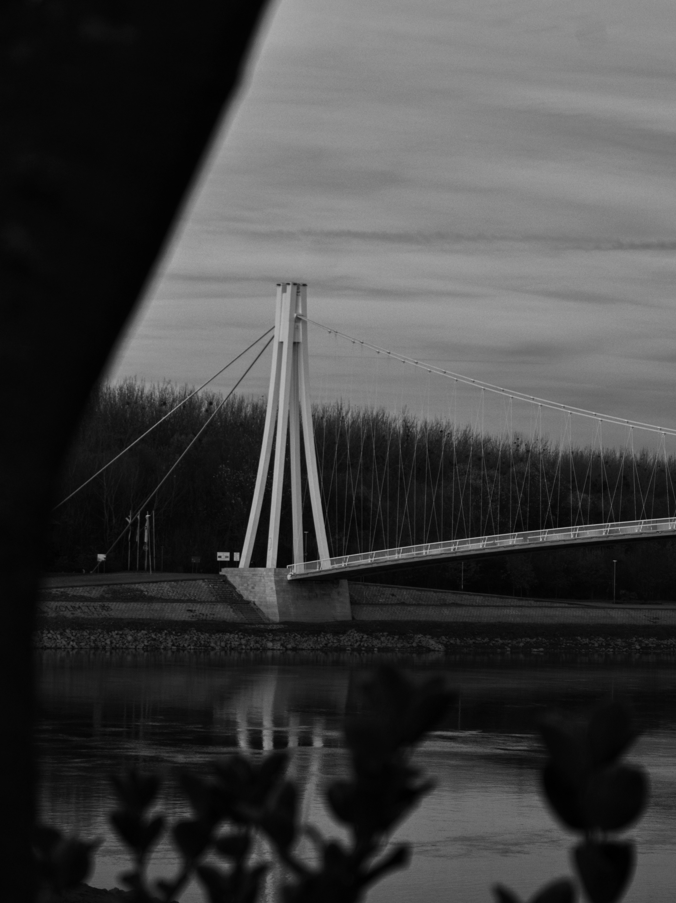
 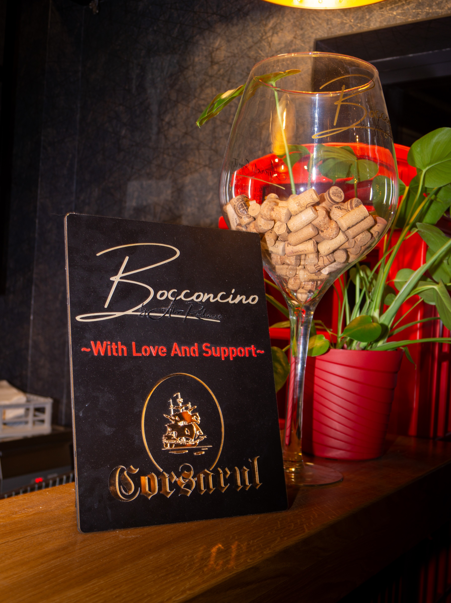
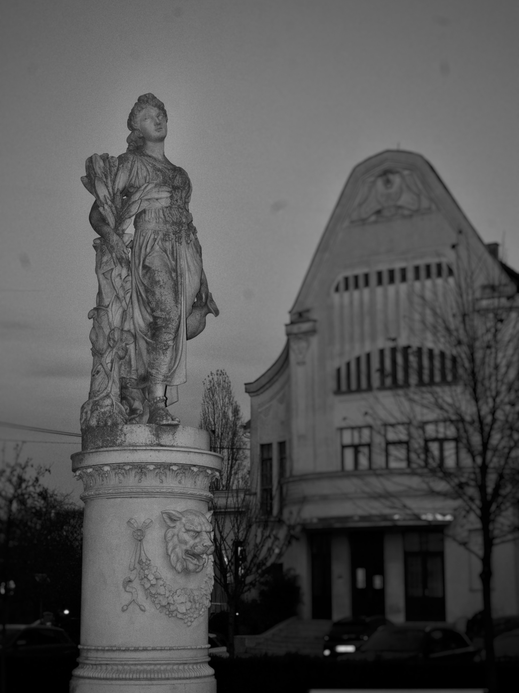
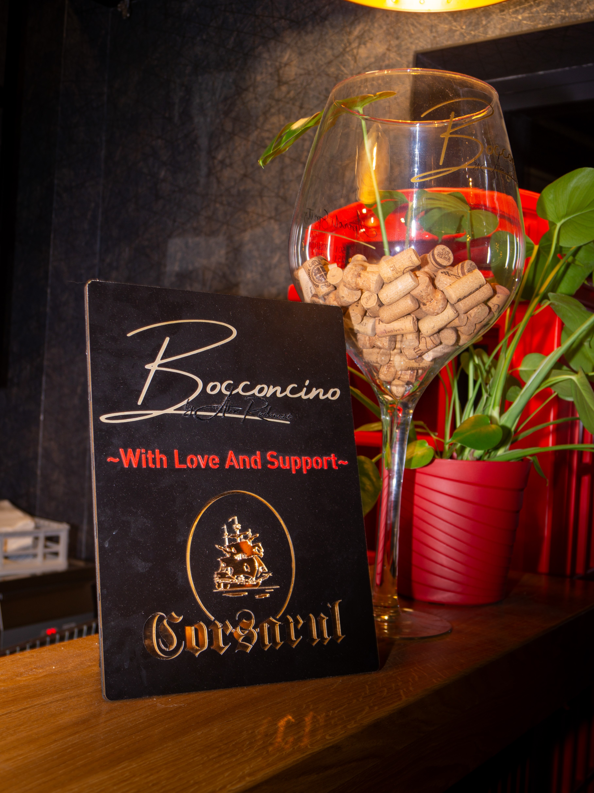
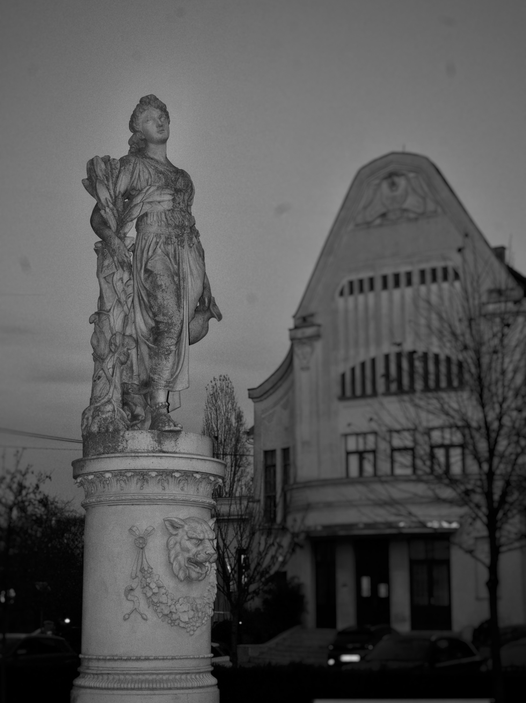